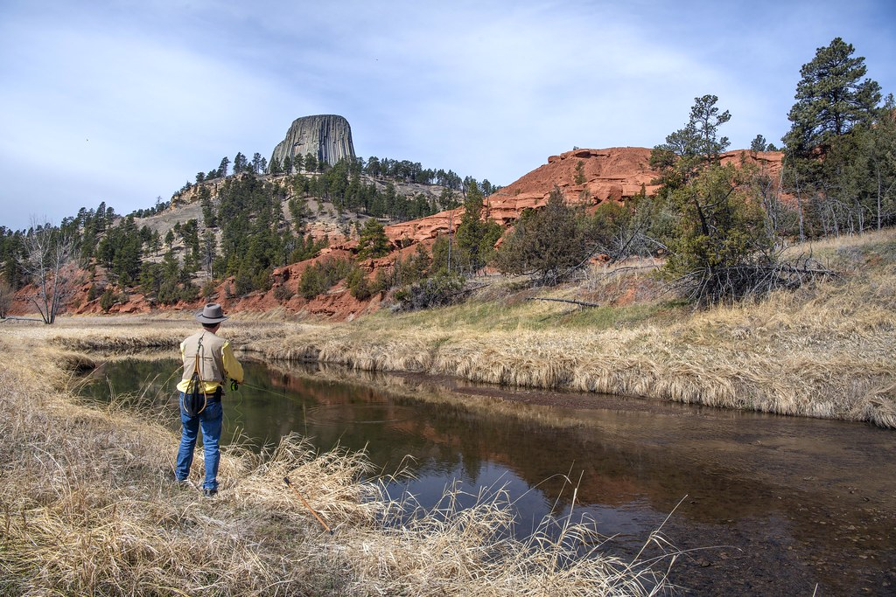
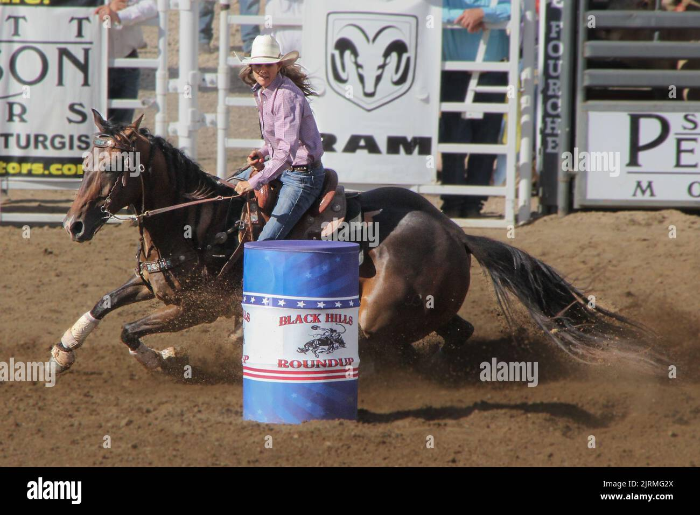

Meet The Locals
Welcome to the heart of Belle Fourche—its people! Here, we celebrate the residents who make our town unique. Whether they've lived here for generations or are newcomers, each person adds a special touch to the vibrant tapestry of this wonderful community. Take a moment to get to know the locals and discover the personal stories that make Belle Fourche truly one of a kind.
Hows it feel to be a Local?

Being a local in Belle Fourche means being part of a tight-knit, welcoming community where everyone knows your name, and there's always a friendly face around. Life here is slower-paced but rich in connection, where neighbors help each other out, and local businesses become extensions of the family. Whether you're gathering at the local café for coffee or attending one of the town's events like the annual rodeo, there’s a sense of pride in the history and traditions that shape Belle Fourche. It's a place where the beauty of the surrounding plains meets the warmth of the people, and where newcomers quickly feel like they’ve found home.
Locally Loved Spots
While Belle Fourche is a small town, it’s packed with local gems that residents treasure.
The Belle Fourche River
Locals love spending time along the Belle Fourche River, especially during summer. Whether it’s fishing, picnicking, or just enjoying a walk by the water, this river is the perfect spot to relax and take in the beauty of the Black Hills region.
Main Street shops
Main Street is lined with locally owned shops that offer everything from antiques and handcrafted goods to vintage clothing and local art. These small businesses are the heart of the town, and a stroll down Main Street gives you a true taste of the local culture.
The Belle Fourche Rodeo
One of the biggest events in Belle Fourche is the annual Rodeo, a tradition that draws crowds from all around the state and beyond. Local cowboys and cowgirls participate in events like bull riding, barrel racing, and roping. This event is not only a celebration of agriculture and rodeo culture, but it’s also a major gathering point for the community, bringing everyone together for some good old-fashioned fun.
Local Spotlights:Faces of Belle Fourche
1. Meet Sarah & Tim, Owners of The Iron Horse Cafe
Sarah and Tim moved to Belle Fourche 10 years ago, inspired by the community's warmth and charm. They opened The Iron Horse Cafe, a beloved local spot known for its delicious homemade pies and classic diner favorites.
2. Meet Joe, Owner of The Belle Fourche Hardware Store
Joe has been running the Belle Fourche Hardware Store for over 30 years, and his knowledge of tools and farming supplies is unmatched. As a fourth-generation local, Joe has seen Belle Fourche grow and change but says the one constant is the town’s unshakeable sense of community.
3. Meet Emily, Local Artist and School Teacher
Emily is a talented local artist and teacher who uses her passion for art to engage students at Belle Fourche High School. When she's not in the classroom, she can be found creating beautiful landscapes inspired by the plains and hills that surround the area.

Join the Belle Fourche family
Whether you're visiting or you've lived here for years, Belle Fourche is a place where everyone is welcomed like family. Our locals are what make this town so special, and we invite you to experience the warmth and spirit of our community.